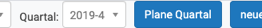
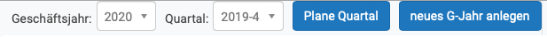
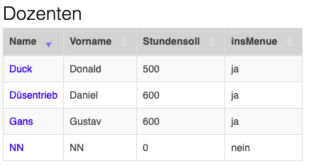
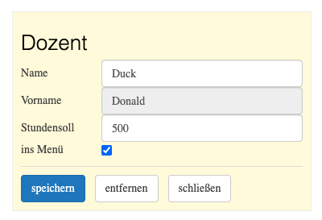

Beispiel einer reaktiven Anwendung
Reaktive Programmierung
Ziele
- Studium eines Beispiels einer reaktiven Anwendung geschrieben in ClojureScript unter Verwendung von React
- Kennenlernen eines Clojurescript Rahmenwerks für React
Schematische Darstellung interaktiver Anwendungen
Formulierung in einer internen DSL
(big-bang state ;; der Weltzustand {:on-tick tick-handler ;; tick-handler liefert bei jedem Zeittakt neuen state :on-key key-handler ;; key-handler berechnet aus state und key neuen state :on-mouse mouse-handler ;; mouse-handler berechnet aus state, den Mauskoordinaten ;; und der Mausaktion neuen stat :to-draw render ;; render verwandelt state in ein Bild (view) :stop-when end?} ;; end? ermittelt aus state das Ende der Ausführung ...)
- Die Handler,
renderundend?sind reine Funktionen. - Die Mutation von
stateist inbig-bangversteckt.
Herkunft
- Die gezeigte Darstellung lehnt sich an [felleisen2018how] an.
-

Kleines Beispiel
(ns bb.my-scetch (:require [quil.core :as q] [bb.big-bang :refer [big-bang]])) (defn number->square [state] (q/rect 200 200 (:size state) (:size state))) (defn reset [state] (assoc state :size 100)) (defn my-scetch [] (big-bang {:size 100} {:to-draw number->square :on-tick #(- % 0.5) :on-key reset :stop-when #(= % -20)})
- Bestandteile
- Events (
:on-tick,:on-key) - Handler (
#(- % 0.5),reset, #(= % -20)) - Views (
number->square)
- Events (
- Link: big-bang
Reagent
- Reagent: schlanke Schnittstelle zwischen Clojurescript und React
- React-Komponenten werden durch Clojurescript-Funktionen realisiert.
- HTML-Fragmente werden durch eine hiccup genannte interne DSL mit Clojure(script)-Datenstrukturen beschrieben
- Beispiel: die Datenstruktur
[:a {:href "http://github.com"} "GitHub"]
wird so in HTML verwandelt:
<a href="http://github.com">GitHub</a> - Beispiele einfacher Reagent-Komponenten
Eigenschaften von re-frame
- Clojurescript-Framework auf Basis von Reagent/React für die Programmierung und Benutzungsoberflächen von Single-Page-Applications
- funktional
nutzt die Homoikonizitäts-Eigenschaft von Lisp:
You are programming in data. The functions which later transform data, themselves start as data.
- sehr ausführliche Dokumentation
- unidirektionaler Datenfluss
Sechs Dominosteine
- Event dispatch
- Event = Reaktion auf externe Ereignisse (Mausklick, Websocket-Nachricht etc.)
- Event handling
- Reaktion auf ein Event, notwendige Seiteneffekte werden ermittelt
- Effect handling
- Seiteneffekte werden ausgeführt
Nach diesen drei Schritten ist der App-Zustand aktualisiert. Die drei folgenden Dominosteine berechnen die Funktion \(v = f(z)\). Ein View \(v\) ist eine Funktion \(f\) des App-Zustands \(z\).
- Query
- Extraktion und Aufbereitung der Daten aus \(z\)
- View
- Rendern der Daten aus Query; Verwendung des hiccup-Formats (HTML-DSL)
- DOM
- Die DOM-Knoten des Web-Browsers werden durch Reagent/React aktualisiert.
Zusammenfassung
App-Zustand
- ein globaler Zustand (single source of truth)
- wird von re-frame automatisch angelegt:
(def app-db (reagent/atom {})) - dient quasi als Hauptspeicherdatenbank
- Alternativen
Code-Beispiele
- Musterbeispiel: Dozenteneinsatzplanung für die Bachelorstudiengänge der NORDAKADEMIE
- Enstanden zu Beginn der Nullerjahre
- programmiert in Smalltalk
- motivierender Geschäftsfall: Änderung der Semester-Quartal-Zuordnung für ein Manipel
Html-DSL
- In View-Komponenten wird gemäß re-frame-Dokumentation das mit Reagent bereitgestellte hiccup-Format als HTML-DSL verwendet.
- In der Dozenteneinsatzplanung wird überwiegend eine auf hiccup
aufbauende DSL benutzt: re-com. Re-com stellt
- die üblichen Widgets
- Layout-Komponenten für die Anordnung von Widgets und Layout-Komponenten (horizontale und vertikale Boxen) zur Verfügung.
- Beispiel für eine Schaltfläche:
[button :class "btn-primary" :on-click #(plane-quartal) :label "Plane Quartal"]

<div class="rc-box display-flex rc-button-wrapper display-inline-flex" style="flex-flow: inherit; flex: 0 0 auto; align-items: flex-start;"> <button class="rc-button btn btn-primary" style="flex: 0 0 auto;"> Plane Quartal</button> </div>
Layout-Beispiel
[v-box :children [[box :child "Header"] [h-box :height "100px" :children [[box :size "70px" :child "Nav"] [box :size "1" :child "Content"]]] [box :child "Footer"]]]
resultiert in:
View-Komponente für Auswahl von Geschäftsjahr und Quartal

- Die View-Funktion
geschaeftjahr-quartal-formrendert in den Zeilen 10 und 11 die Auswahlbox für das aktuelle Geschaeftsjahr. - Wählt der Benutzer ein Geschäftsjahr aus, wird die Handlerfunktion
dispatchaufgerufen. - Dadurch wird ein re-frame-Event (Domino 1) ausgelöst.
- Jedes Event wird durch ein Vektor beschrieben:
- Das Keyword
:geschaeftsjahrbenennt das Event. - Der Ausdruck
(:key %)liefert das ausgewählte Geschäftsjahr.
- Das Keyword
(defn geschaeftjahr-quartal-form "Die Auswahlboxen für Geschäftsjahr und Quartal und die Planungsschaltfläche." [] (let [jahre @(rf/subscribe [:jahre]) quartale @(rf/subscribe [:quartale]) quartal @(rf/subscribe [:quartal]) geschaeftsjahr @(rf/subscribe [:geschaeftsjahr])] [h-box :class "bg-light border-right" :gap "10px" :children [(select-box "Geschäftsjahr:" jahre geschaeftsjahr #(rf/dispatch [:geschaeftsjahr (:key %)])) (select-box "Quartal:" quartale (quartal->string quartal) #(rf/dispatch [:quartal (:key %)])) [button :class "btn-primary" :on-click #(plane-quartal) :label "Plane Quartal"] [button :class "btn-primary" :on-click #(neues-geschaeftjahr) :label "neues G-Jahr anlegen"] ]]))
Der Handler für das Event :geschaeftsjahr
- Event-Bezeichner sind Teil der DSL für das programmierte re-frame-System.
- Der folgende Ausdruck registriert den Handler für das Event
:geschaeftsjahr. - Das zweite Argument von
rf/reg-event-dbist der eigentliche Event-Handler (Domino 2), hier eine anonyme Funktion. - Diese Funktion erwartet zwei Argumente:
- die Datenbank mit dem globalen Zustand der Anwendung
- einen Vektor, dessen erstes Element hier irrelevant ist und dessen zweites Element das zweite Element des Dispatch-Vektors enthält (hier: das vom Benutzer ausgewählte Geschäftsjahr).
- Der Rumpf des Handlers beschreibt die Änderung der Datenbank:
- Das Geschäftsjahr wird auf das vom Benutzer selektierte gesetzt.
- Das Quartal wird auf das erste des Geschäftsjahrs gesetzt.
(rf/reg-event-db :geschaeftsjahr (fn [db [_ item]] (assoc db :geschaeftsjahr (js/parseInt item) :quartal (first (quartale-fuer-jahr item)))))
Das Effect-Handling für das Event :geschaeftsjahr
- Im Allgemeinen verarbeiten Effect-Handler-Funktionen das Resultat der Event-Handler-Funktion (Domino 2).
- Dieses sieht meistens so aus:
{:db new-db}, wobeinew-dbdie vom Event-Handler berechnete neue Datenbank ist. - Der Effect-Handler für den Effect
:dbist in re-frame vordefiniert und setzt die Datenbank auf den neuen Wert (Mutation!). In dem Fall muss der Programmierer für Domino 3 nichts tun. - Für andere Effekte können eigene Effect-Handler registriert werden.
Query – View – DOM
- Nachdem der Zustand der Applikation neu berechnet ist, wird ein neues View ermittelt: \(v = f(s)\).
- Eine Anwendung enthält in der Regel mehrere View-Funktionen,
geschaeftjahr-quartal-formist eine der View-Funktionen der Dozenteneinsatzplanung. - Jede View-Funktion definiert Queries für die Teile der Datenbank, deren Änderung eine Neuberechnung des Views erfordert.
- Durch den Ausdruck
(rf/subscribe [:geschaeftsjahr])wird eine Query-Funktion mit der Kennung:geschaeftsjahrregistriert.
(defn geschaeftjahr-quartal-form "Die Auswahlboxen für Geschäftsjahr und Quartal und die Planungsschaltfläche." [] (let [jahre @(rf/subscribe [:jahre]) quartale @(rf/subscribe [:quartale]) quartal @(rf/subscribe [:quartal]) geschaeftsjahr @(rf/subscribe [:geschaeftsjahr])] [h-box :class "bg-light border-right" :gap "10px" :children [(select-box "Geschäftsjahr:" jahre geschaeftsjahr #(rf/dispatch [:geschaeftsjahr (:key %)])) (select-box "Quartal:" quartale (quartal->string quartal) #(rf/dispatch [:quartal (:key %)])) [button :class "btn-primary" :on-click #(plane-quartal) :label "Plane Quartal"] [button :class "btn-primary" :on-click #(neues-geschaeftjahr) :label "neues G-Jahr anlegen"] ]]))
- Die anonyme Query-Funktion wird mithilfe von
reg-subregistriert. - Sie liefert das in der Datenbank gespeicherte aktuelle Geschäftsjahr als Resultat.
(rf/reg-sub :geschaeftsjahr (fn [db _] (:geschaeftsjahr db)))
- Jede Änderung des Geschäftsjahrs führt zur Ausführung der
View-Funktion
geschaeftjahr-quartal-formsowie - aller für
:geschaeftsjahrregistrierten View-Funktionen. - Die View-Funktionen berechnen das DOM neu, alles Weitere erledigt React.
View-Komponente für die Anzeige der Dozentenauslastung
- Eine weitere für die Kennung
:geschaeftsjahrregistrierte View-Funktion istdozentenauslastung. - Neben dem
:geschaeftsjahrist die Funktion für die Query-Funktionen:dozentenund:lven(Lehrveranstaltungen) registriert.
(defn dozentenauslastung "Komponente für die Anzeige der Dozentenauslastung." [] (let [dozenten @(rf/subscribe [:dozenten]) geschaeftsjahr @(rf/subscribe [:geschaeftsjahr]) lven @(rf/subscribe [:lven]) _ (aktualisiere-dozentenauslastung lven dozenten geschaeftsjahr)] [table-ui (doz-auslstngn->table dozenten) "Dozentenauslastung" [:Dozent :Q4 :Q1 :Q2 :Q3 :Summe] [:Dozent :Q4 :Q1 :Q2 :Q3 :Summe] [[:Dozent false]] td-render-fn ]))
- Im Rumpf der Funktion werden mithilfe einer weiteren internen DSL die Auslastungsdaten der Dozenten in eine HTML-Tabelle verwandelt.
Modale Dialoge
- benutzt für Pflegedialoge für Manipel, Module, Dozenten …
- werden aktiviert aus dem Menü am linken Rand
Die Komponente dozenten

(defn dozenten "Komponente für die Anzeige und Bearbeitung der Dozenten." [] (let [dozenten @(rf/subscribe [:dozenten])] [table-ui (dozenten->table dozenten) "Dozenten" [:Name :Vorname :Stundensoll :insMenue] [:Name :Vorname :Stundensoll :insMenue] [[:Name false]] (partial td-render-fn :Name dozent-form-felder buttons) ]))
- Alle modalen Dialoge sind nach dem gleichen Muster aufgebaut.
(defn dozenten "Komponente für die Anzeige und Bearbeitung der Dozenten." [] (let [dozenten @(rf/subscribe [:dozenten])] [table-ui (dozenten->table dozenten) "Dozenten" [:Name :Vorname :Stundensoll :insMenue] [:Name :Vorname :Stundensoll :insMenue] [[:Name false]] (partial td-render-fn :Name dozent-form-felder buttons) ]))
;; Subskription der Dozenten aus der app-db ;; Aufruf einer "Hilfskomponente" (benutzt für alle Tabellen) ;; Projektion der Datenstruktur auf Tabellenspalten ;; Tabellenüberschrift ;; Keywords für die Spaltenüberschriften ;; sortierbare Spalten ;; sortierte Spalten ;; partieller Aufruf der Komponente für modalen Dialog
- Der Aufruf
(partial td-render-fn :Name dozent-form-felder buttons)legt fest- der Klick auf welches Datenfeld den modalen Dialog aktiviert
(
:Name) - welche Eingabefelder der Dialog bereitstellen soll
(
dozent-form-felder) - welche Schaltfächen der Dialog bereitstellen soll
(
buttons)
- der Klick auf welches Datenfeld den modalen Dialog aktiviert
(
- Zum Beispiel: Ein Klick auf "Duck" öffnet den modalen Dialog
Dozent
Modaler Dialog Dozent

Alle modalen Dialoge werden durch dieselbe Komponente erstellt:
(defn standard-form "Komponente für das Bearbeitungsformular." [fields form-data buttons process-cancel] (let [form-state (reagent/atom form-data)] (fn [] [border :border "1px solid #eee" :child [v-box :padding "10px" :style {:background-color "cornsilk"} :children (concat (fields form-state) [[line :color "#ddd" :style {:margin "10px 0 10px"}]] [[h-box :gap "12px" :children (conj (buttons form-state) [button :label "schließen" :on-click process-cancel])]])]])))
Infos aus der re-frame-Dokumentation
FRP vs. MVC
Model-View-Controller
Datenfluss

- repräsentiert das Single Responsibility Principle
- komplexere Anwendungen (mit intensiver Benutzerinterkation)
überfordern den Controller:
- Verwaltung des Anwendungszustands
- Mittler zwischen View und Model
Model-Binding
Datenfluss

- Anwendungszustand und -daten werden von zwei Quellen manipuliert – unter Umgehung des Controllers
- Vorteil: Controller wird entlastet
- Nachteil: Der aktuelle Zustand ist schwer vorhersagbar
Unidirektionaler Datenfluss

- Änderungen im View löst Aktionen in der Datenkomponente (Application-Store) aus.
- Diese Änderungen haben Rückwirkungen auf die View-Komponente
- Kein direkter Zugriff von View auf die Application-Store
- In React ist der View eine (pure) Funktion der Anwendungsdaten.